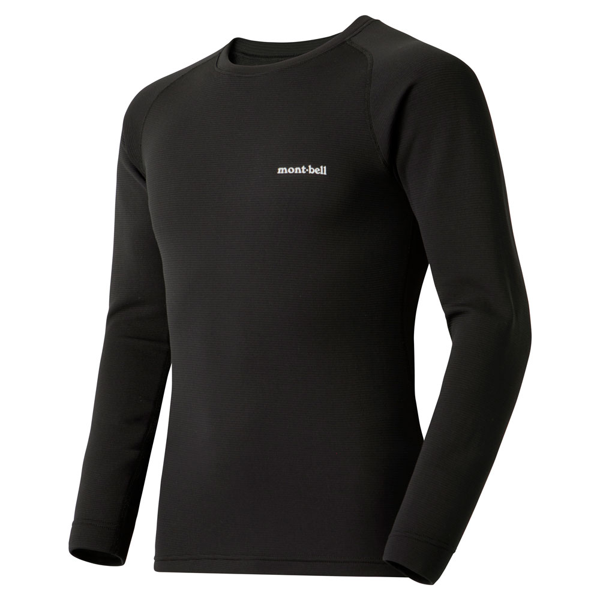
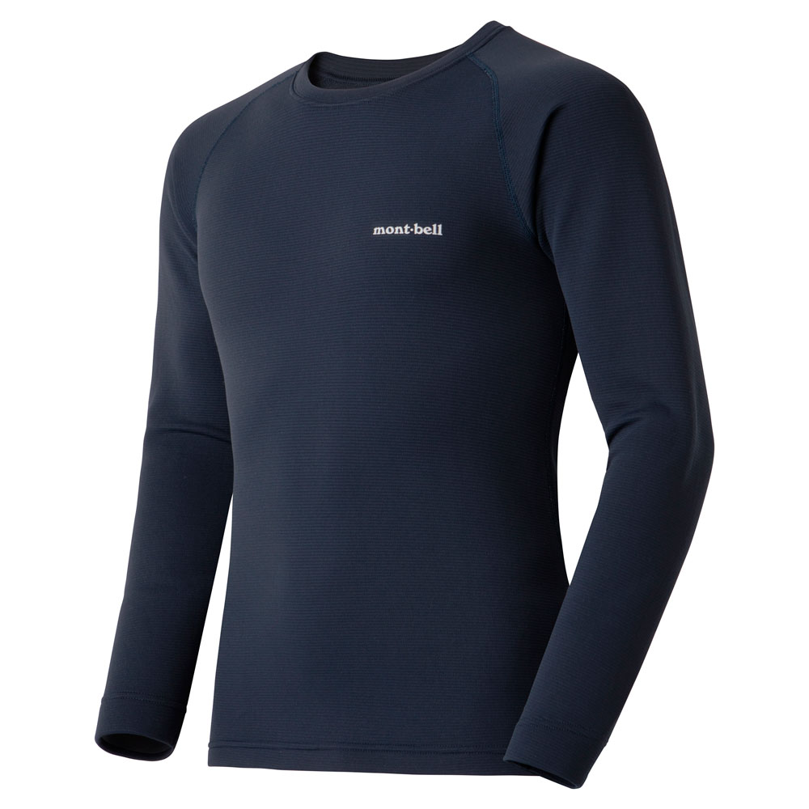
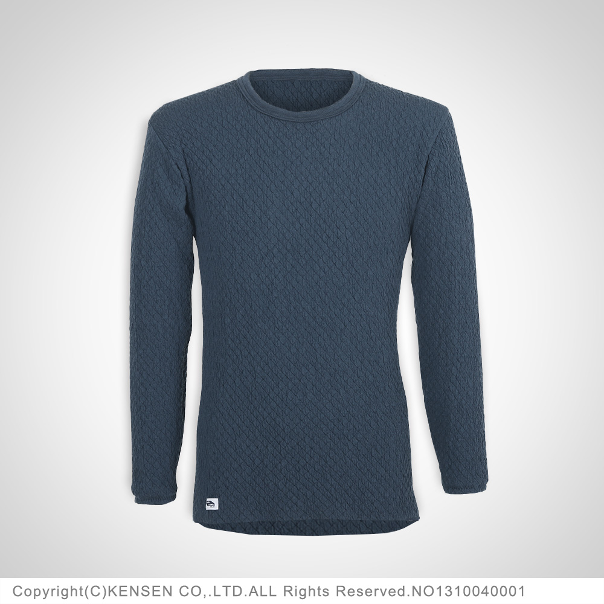
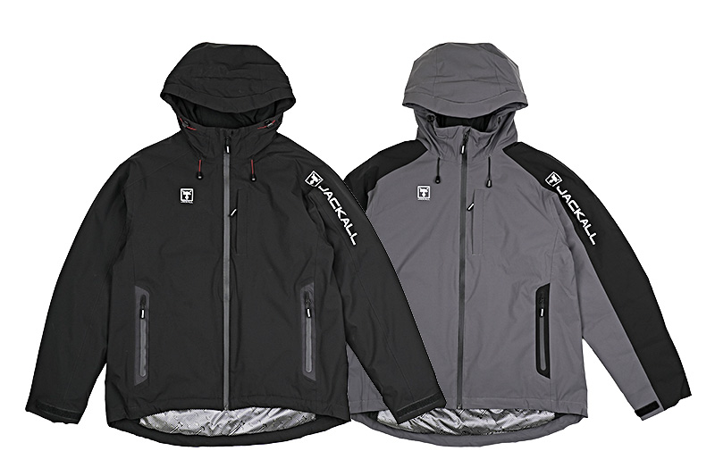

ジオライン EXP.
ジオライン EXP.は、モンベルの機能性アンダーウエア「ジオライン」の厚手モデルです（EXP.＝エクスペディション）。厳寒地での着用を前提に、保温性を重視して作られています。
表面と肌面の2つの層のあいだに空気をたっぷりためる構造で暖かく、厚手なのに伸縮性が高く、体にフィットして動きやすいのが最大の特徴。歩いてポイントを回るオカッパリなど、動きの多い冬の釣りにぴったりのインナーです。

画像出典:モンベル公式HP
スペック
- メーカー
- mont-bell（モンベル）
- 品番
- #1107712（ラウンドネックシャツ Men's）
- サイズ
- S／M／L／XL
- 素材
- ジオライン®（ポリエステル100％）
- 平均重量
- 215g
- カラー
- ブラック／ネイビー
- 価格
- 6,050円（税込）
▼今すぐチェック

ジオライン EXP.の特徴
厚手の暖かさと、動きやすさ
-
空気の層で暖かさを逃がさない
滑らかな表面の層と、柔らかい肌面の層を隔壁でつないだ「ボックス構造」。ふっくらとした空気層が、断熱層になる動かない空気（デッドエア）をたっぷりためて、高い保温性を生む。
-
厚手でも伸びて体にフィット
厚手ながら伸縮性に優れ、体にぴったりフィットする。表面の滑りが良いので、上にフリースや防寒ジャケットを重ねても腕が動かしやすく、キャストの邪魔になりにくい。
-
着心地を考えたディテール
袖口の縫い目を斜めにした「スパイラル スランテック®カフ」（特許取得済み）で、袖口が締め付けない。縫い目が肌に当たりにくいフラットシーマー、裾を長めにしたロングテール・デザインで、かがんでも背中が出にくい。
ジオライン EXP.の使い方
肌に直接着るインナー（ベースレイヤー）として使い、上にフリースなどの中間着、いちばん外に防寒ジャケットを重ねるのが基本です。
間に綿のTシャツを重ねずに、肌に直接着るのがポイント。綿は汗を吸ったまま乾きにくく、せっかくのジオラインの上で汗冷えの原因になってしまいます。洗濯は洗濯ネットに入れ、柔軟剤は使わないようにしましょう。
ジオライン EXP.がおすすめの人
ランガンのシーバスやサーフのヒラメ、ショアジギングなど、冬でも歩いてよく動き、汗をかきやすい釣りをする人におすすめです。
動いて汗をかいたあと、ポイントで止まった時に体が冷えるのが冬の釣りのつらいところ。暖かさと動きやすさを両立したインナーなら、寒い日でもキャストを続けられるので、冬の短い時合いで釣れるチャンスを逃しにくくなります。
ワンポイント
風の強い堤防や冬の夜釣りでは、首元から熱が逃げていきます。風が強い日は首まで覆うハイネックシャツを選び、下はEXP.タイツを合わせると、上下と首まわりの冷えをまとめて防げます。
ジオラインの厚さの違い
| モデル | 特徴 | 平均重量 | 価格（税込） |
|---|---|---|---|
| M.W. ラウンドネックシャツ（#1107704） | 中厚手。秋や、よく動く日の冬の釣りに | 159g | 4,730円 |
| EXP. ラウンドネックシャツ（#1107712） | 厚手。厳寒地向けで保温性を重視（本記事のモデル） | 215g | 6,050円 |
| EXP. ハイネックシャツ（#1107714） | 厚手。首元まで覆って風の強い日も暖かい | 233g | 6,490円 |
| EXP. タイツ（#1107716） | 厚手の下半身用。前開き付き | 189g | 5,720円 |
ジオラインには、ほかに薄手のL.W.もあります。真冬の釣りならEXP.、秋から初冬や、歩く距離が長い日はM.W.と使い分けると、汗冷えしにくく快適です。（価格・重量はいずれもMen's）
ジオライン EXP.とチョモランマの違い
同じ冬の防寒インナーとして人気の、ひだまり チョモランマと比べました。
| ジオライン EXP. | チョモランマ | |
|---|---|---|
| 素材 | ジオライン®（ポリエステル100％） | アクリル・毛（ウール）・ナイロン・ダンロン®の3重構造 |
| 暖かさの仕組み | ボックス構造の空気層（デッドエア）で体温を逃がさない | 肌側の「ダンロン®」が熱を伝えにくく、外の冷えを受けにくい |
| 得意な釣り | 歩いてよく動く釣り（ランガン・サーフ） | じっと待つ時間が長い釣り（堤防・船・夜釣り） |
| 着心地 | 体にフィット。伸縮性が高く重ね着しやすい | ゆったりフィット。後ろ身頃が長め |
| サイズ（紳士） | S／M／L／XL | M／L／LL |
| 価格（税込） | シャツ 6,050円 | シャツ 12,100円 |
| 洗濯の注意 | 洗濯ネットを使う。柔軟剤は使わない | 40℃まで。乾燥機・アイロン不可、カイロの直貼り不可 |
歩いてよく動き汗をかきやすい釣りならジオライン EXP.、待つ時間の長い釣りで、とにかく暖かさを優先するならチョモランマがおすすめです。
カラー
ジオライン EXP. ラウンドネックシャツのカラーを紹介します。

ブラック汚れが目立ちにくく、どんなウェアとも合わせやすい定番カラー。

ネイビー落ち着いた濃紺。首元や袖口から見えても普段着になじむカラー。
画像出典:モンベル公式HP
▼今すぐチェック
ジオライン EXP.とあわせてチェックしたいアイテム
-

チョモランマ ひだまり 詳細はこちら＞待つ釣りに向く日本製の防寒インナー。とにかく暖かさ優先の人に。
-

サーモフォース アクティブジャケット ジャッカル 詳細はこちら＞暖かさと動きやすさを両立した防寒ジャケット。動く釣りのアウターに。
-
 タイタニュームフィットグローブ
アイマ
詳細はこちら＞
タイタニュームフィットグローブ
アイマ
詳細はこちら＞
冬の釣りの防寒グローブ。手先の冷えも防ぎたい時に。